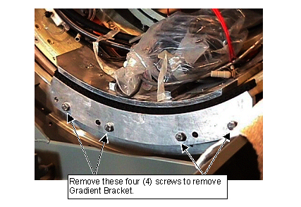
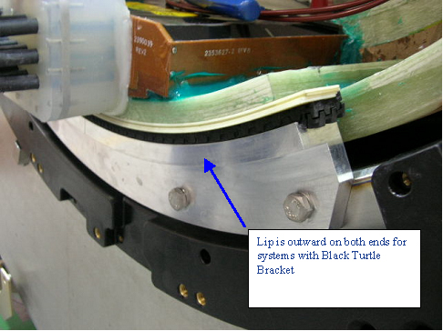

Illustration 26: Gradient Bracket Screw Location

| NOTE: | If a Black Turtle Bracket is used, the Gradient Support Bracket mounts to the magnet not the Turtle Bracket. The illustration below shows the proper mounting method of the Gradient Support Bracket for a system with Black Turtle Bracket. |
Illustration 27: Gradient Support Bracket for Systems with Black Turtle Bracket
